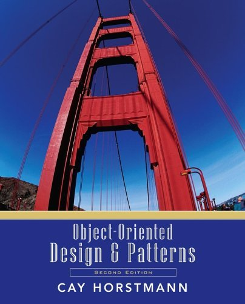

Object-Oriented Design & Patterns
Cay S. Horstmann
Chapter 6
Inheritance and Abstract Classes

Chapter Topics
- The Concept of Inheritance
- Graphics Programming with Inheritance
- Abstract Classes
- The TEMPLATE METHOD Pattern
- Protected Interfaces
- The Hierarchy of Swing Components
- The Hierarchy of Standard Geometrical Shapes
- The Hierarchy of Exception Classes
- When Not to Use Inheritance
Modeling Specialization
- Start with simple Employee class
public class Employee
{
public Employee(String aName) { name = aName; }
public void setSalary(double aSalary) { salary = aSalary; }
public String getName() { return name; }
public double getSalary() { return salary; }
private String name;
private double salary;
}
- Manager is a subclass
Modeling Specialization
- Manager class adds new method: setBonus
- Manager class overrides existing method: getSalary
- Adds salary and bonus
- public class Manager extends Employee
{
public Manager(String aName) { ... }
public void setBonus(double aBonus) { bonus = aBonus; } //
new method
public double getSalary() { ... } // overrides Employee
method
private double bonus; // new field
}
Modeling Specialization
Manager Methods and Fields
- methods setSalary, getname (inherited from Employee)
- method getSalary (overridden in Manager)
- method setBonus (defined in Manager)
- fields name and salary (defined in Employee)
- field bonus (defined in Manager)
The Super/Sub Terminology
- Why is Manager a subclass?
- Isn't a Manager superior?
- Doesn't a Manager object have more fields?
- The set of managers is a subset of the set of employees
The Super/Sub Terminology
Inheritance Hierarchies
- Real world: Hierarchies describe general/specific relationships
- General concept at root of tree
- More specific concepts are children
- Programming: Inheritance hierarchy
- General superclass at root of tree
- More specific subclasses are children
Inheritance Hierarchies
The Substitution Principle
- Formulated by Barbara Liskov
- You can use a subclass object whenever a superclass object is
expected
- Example:
Employee e;
...
System.out.println("salary=" + e.getSalary());
- Can set e to Manager reference
- Polymorphism: Correct getSalary method is invoked
Invoking Superclass Methods
- Can't access private fields of superclass
public class Manager extends Employee
{
public double getSalary()
{
return salary + bonus; //
ERROR--private field
}
...
}
- Be careful when calling superclass method
public double getSalary()
{
return getSalary() + bonus; //
ERROR--recursive call
}
Invoking Superclass Methods
- Use super keyword
public double getSalary()
{
return super.getSalary() +
bonus;
}
- super is not a reference
- super turns off polymorphic call mechanism
Invoking Superclass Constructors
- Use super keyword in subclass constructor:
public Manager(String aName)
{
super(aName); // calls superclass constructor
bonus = 0;
}
- Call to super must be first statement in
subclass constructor
- If subclass constructor doesn't call super, superclass
must have constructor without parameters
Preconditions
- Precondition of redefined method at most as strong
-
public class Employee
{
/**
Sets the employee salary to a given value.
@param aSalary the new salary
@precondition aSalary > 0
*/
public void setSalary(double aSalary) { ... }
}
- Can we redefine Manager.setSalary with precondition
salary > 100000?
- No--Could be defeated:
Manager m = new Manager();
Employee e = m;
e.setSalary(50000);
Postconditions, Visibility, Exceptions
- Postcondition of redefined method at least as strong
- Example: Employee.setSalary promises not to decrease
salary
- Then Manager.setSalary must fulfill postcondition
- Redefined method cannot be more private.
(Common error: omit public when redefining)
- Redefined method cannot throw more checked exceptions
Graphic Programming with Inheritance
- Chapter 4: Create drawings by by implementing Icon
interface type
- Now: Form subclass of JComponent
public class MyComponent extends JComponent
{
public void paintComponent(Graphics g)
{
drawing instructions go here
}
...
}
- Advantage: Inherit behavior from JComponent
- Example: Can attach mouse listener to JComponent
Mouse Listeners
Mouse Adapters
- What if you just want to listen to mousePressed?
- Extend MouseAdapter
public class MouseAdapter implements MouseListener
{
public void mouseClicked(MouseEvent event) {}
public void mousePressed(MouseEvent event) {}
public void mouseReleased(MouseEvent event) {}
public void mouseEntered(MouseEvent event) {}
public void mouseExited(MouseEvent event) {}
}
- Component constructor adds listener:
addMouseListener(new
MouseAdapter()
{
public void mousePressed(MouseEvent event)
{
mouse action goes here
}
});
Car Mover Program
Car Mover Program

Scene Editor
- Draws various shapes
- User can add, delete, move shapes
- User selects shape with mouse
- Selected shape is highlighted (filled in)
Scene Editor

The SceneShape Interface Type
- keep track of selection state
- draw plain or selected shape
- move shape
- hit testing: is a point (e.g. mouse position) inside?
The SceneShape Interface Type

The SceneShape Interface Type
public interface SceneShape
{
void setSelected(boolean b);
boolean isSelected();
void draw(Graphics2D g2);
void drawSelection(Graphics2D g2);
void translate(int dx, int dy);
boolean contains(Point2D aPoint);
}
CarShape and HouseShape Classes
public class CarShape implements SceneShape
{
...
public void setSelected(boolean b) { selected = b; }
public boolean isSelected() { return selected; }
private boolean selected;
}
public class HouseShape implements SceneShape
{
...
public void setSelected(boolean b) { selected = b; }
public boolean isSelected() { return selected; }
private boolean selected;
}
Abstract Classes
- Factor out common behavior
(setSelected, isSelected)
- Subclasses inherit common behavior
- Some methods still undefined
(draw, drawSelection, translate, contains)
public class SelectableShape implements Item
{
public void setSelected(boolean b) { selected = b; }
public boolean isSelected() { return selected; }
private boolean selected;
}
Abstract Classes

Abstract Classes
Abstract Classes and Interface Types
- Abstract classes can have fields
- Interface types can only have constants (public static final)
- Abstract classes can define methods
- Interface types can only declare methods
- A class can implement any number of interface types
- In Java, a class can extend only one other class
Scene Editor
Uniform Highlighting Technique
- Old approach: each shape draws its selection state
- Inconsistent
- Better approach: shift, draw, shift, draw, restore to original
position
- Define in SelectableShape
public void drawSelection(Graphics2D g2)
{
translate(1, 1);
draw(g2);
translate(1, 1);
draw(g2);
translate(-2, -2);
}
Uniform Highlighting Technique

Template Method
- drawSelection calls draw
- Must declare draw in SelectableShape
- No implementation at that level!
- Declare as abstract method
public abstract void draw(Graphics2D g2)
- Defined in CarShape, HouseShape
- drawSelection method calls draw, translate
- drawSelection doesn't know which
methods--polymorphism
- drawSelection is a template method
- Ch6/scene2/SelectableShape.java
- Ch6/scene2/HouseShape.java
TEMPLATE METHOD Pattern
Context
- An algorithm is applicable for multiple types.
- The algorithm can be broken down into primitive operations.
The primitive operations can be different for each type
- The order of the primitive operations doesn't depend on the type
TEMPLATE METHOD Pattern
Solution
- Define a superclass that has a method for the algorithm and
abstract methods for the primitive operations.
- Implement the algorithm to call the primitive operations in the
appropriate order.
- Do not define the primitive operations in the superclass, or
define them to have appropriate default behavior.
- Each subclass defines the primitive operations but not the
algorithm.
TEMPLATE METHOD Pattern

TEMPLATE METHOD Pattern
Name in
Design Pattern
|
Actual Name
(Selectable shapes)
|
AbstractClass
|
SelectableShape
|
ConcreteClass
|
CarShape,
HouseShape
|
templateMethod()
|
drawSelection
|
primitiveOp1(),
primitiveOp2()
|
translate,
draw
|
Compound Shapes
Compound Shapes
Access to Superclass Features
Protected Access
- Make CompoundShape.add method protected
- Protects HouseShape: other classes can't add graffiti
- Protected features can be accessed by subclass methods...
- ...and by methods in the same package
- Bad idea to make fields protected
protected GeneralPath path; // DON'T
- Ok to make methods protected
protected void add(Shape s) // GOOD
- Protected interface separate from public interface
Hierarchy of Swing Components
Hierarchy of Swing Components
Hierarchy of Swing Components
- History: First came AWT, Abstract Window Toolkit
- Used native components
- Subtle platform inconsistencies
- Write once, run anywhere ->
Write once, debug everywhere
- Swing paints components onto blank windows
- Supports multiple look and feel implementations
Look and Feel
Hierarchy of Swing Components
- Base of Swing components: JComponent
- Subclass of Container
- Some Swing components are containers
- Java has no multiple inheritance
- JLabel, JButton, ... are subclasses of JComponent
- Intermediate classes AbstractButton, JTextComponent
Hierarchy of Geometrical Shapes
Hierarchy of Geometrical Shapes

Rectangular Shapes
Float/Double Classes
Float/Double Classes
Float/Double Classes
public class Rectangle2D
{
public static class Float extends Rectangle2D
{
public double getX() { return x; }
public double getY() { return y; }
public double getWidth() { return width; }
public double getHeight() { return height;}
public void setRect(float x, float y, float w, float h)
{
this.x = x; this.y = y;
this.width = w; this.height = h;
}
public void setRect(double x, double y,
double w, double h)
{
this.x = (float)x; this.y = (float)y;
this.width = (float)w; this.height = (float)h;
}
...
public float x;
public float y;
public float width;
public float height;
}
. . .
Float/Double Classes
. . .
public static class Double extends Rectangle2D
public double getX() { return x; }
public double getY() { return y; }
public double getWidth() { return width; }
public double getHeight() { return height;}
public void setRect(double x, double y,
double w, double h)
{
this.x = x; this.y = y;
this.width = w; this.height = h;
}
...
public double x;
public double y;
public double width;
public double height;
}
...
}
Float/Double Classes
TEMPLATE METHOD Pattern
Name in
Design Pattern
|
Actual Name
(Rectangles)
|
AbstractClass
|
Rectangle
|
ConcreteClass
|
Rectangle2D.Double
|
templateMethod()
|
contains
|
primitiveOpn()
|
getX,
getY, getWidth, getHeight |
Hierarchy of Exception Classes
- Base of hierarchy: Throwable
- Two subclasses: Error, Exception
- Subclasses of Error: fatal
(out of memory, assertion failure)
- Subclasses of Exception:
-
- Lots of checked exceptions
(I/O, class not found)
- RuntimeException--its subclasses are unchecked
(null pointer, index out of bounds)
Hierarchy of Exception Classes

Catching Exceptions
Defining Exception Classes
When Not to Use Inheritance
- From a tutorial for a C++ compiler:
public class Point
{
public Point(int anX, int aY) { ... }
public void translate(int dx, int dy) { ... }
private int x;
private int y;
}
public class Circle extends Point // DON'T
{
public Circle(Point center, int radius) { ... }
public void draw(Graphics g) { ... }
private int radius;
}
When Not to Use Inheritance
- Huh? A circle isn't a point.
- By accident, inherited translate works for circles
- Same tutorial makes Rectangle a subclass of Point:
public class Rectangle extends Point // DON'T
{
public Rectangle(Point corner1, Point corner2) { ... }
public void draw(Graphics g) { ... }
public void translate(int dx, int dy) { ... }
private Point other;
}
When Not to Use Inheritance
When Not to Use Inheritance